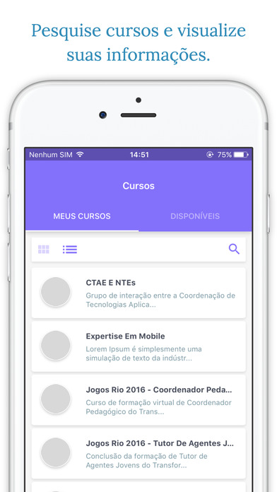
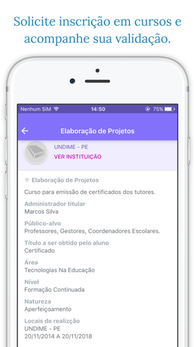
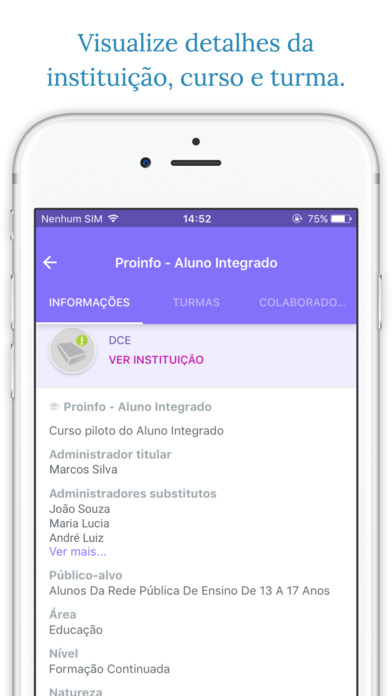
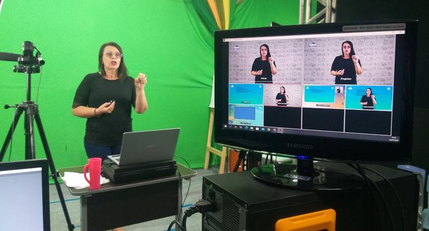
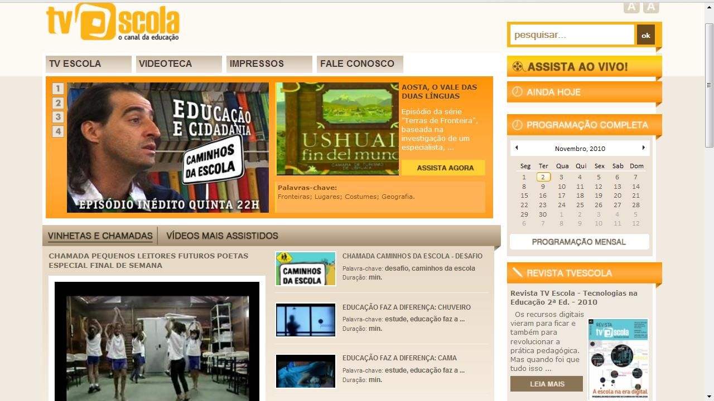

ブラジルの主要な公共デジタル教育プラットフォーム
ブラジルでは、教育のデジタル化と学習機会の平等化を進めるために、政府が運営する 無料のオンラインプラットフォームが多数提供されています。以下では、特に重要で広く利用されている 5つの代表的なプラットフォームを紹介します。
1. AVAMEC（MECバーチャル学習環境）
AVAMECはブラジル教育省（MEC）が運営する主要なオンライン学習環境で、大学や連邦機関が制作した 数百の無料オンラインコースを公開しています。教員研修、教育政策、教育技術など幅広い科目を 無料で学ぶことができます。
特徴：
- 動画、PDF、アニメーション、クイズなど豊富な教材
- MEC認定の修了証が無料で発行
- 全国的な研修プログラムで広範に利用
2. e-ProInfo（MEC公式遠隔教育プラットフォーム）
e-ProInfoは教育機関や地方自治体がオンラインコースを独自に作成できるMEC開発のプラットフォームです。 講座管理、教材配布、受講者フォーラムなど、公教育向けのオンライン学習環境として最適化されています。
  特徴：
- フォーラム、チャットなどのコミュニケーション機能
- 教材の配布とモジュール管理
- 受講者の進捗状況を確認可能
3. Portal do Professor（教師向け教育教材ポータル）
Portal do Professorはブラジル教育省が提供する巨大なデジタル教材ライブラリで、全国の教師が 授業計画、動画、実験教材、アニメーションなど多様な教育リソースを無料で利用できます。
特徴：
- 10,000点以上の無料教育リソース
- 学年・教科別に整理された授業プラン
- 動画・実験・アニメーションなど多様な素材
4. TV Escola（公共教育テレビ・デジタルプラットフォーム）
TV Escolaはブラジル政府が設立した教育専門のテレビチャンネルで、インターネットでも 教育用番組を無料配信しています。科学、歴史、文化、教員研修など、多岐にわたる番組が視聴可能です。
 特徴：
- 科学・文化・歴史などに関する教育番組
- ドキュメンタリーやアニメーション教材
- テレビでもオンラインでも視聴可能
5. Recursos Educacionais Digitais – MEC（デジタル教育教材集）
MECが公開するデジタル教材をまとめた公式ポータルで、学校や自宅学習で使える ゲーム、シミュレーション、動画、インタラクティブ教材が多数揃っています。
特徴：
- 教育ゲーム・シミュレーション・動画などの現代的教材
- 小中高校向けに最適化された学習コンテンツ
- 対面授業・ハイブリッド授業で利用可能
6. RA nas Escolas（UFSC/拡張現実教育プラットフォーム）
RA nas Escolas は、Universidade Federal de Santa Catarina（UFSC）のLabTeCが開発した教育プラットフォームで、算数・数学の授業に「拡張現実（AR）」を取り入れ、学習体験を没入型に変えることを目的としています。 公立学校の教師・生徒向けに設計されており、AR教材を通じて新しい学びを実現します。
特徴：
- ARを活用したインタラクティブな数学教材（3Dキャラクター、ゲーム、動画）
- スマホまたはタブレットで画像をかざすだけで体験できる「Zappar」形式の教材
- 教師用研修コース・証明書付コースを提供し、教員のICT/AR活用力を支援